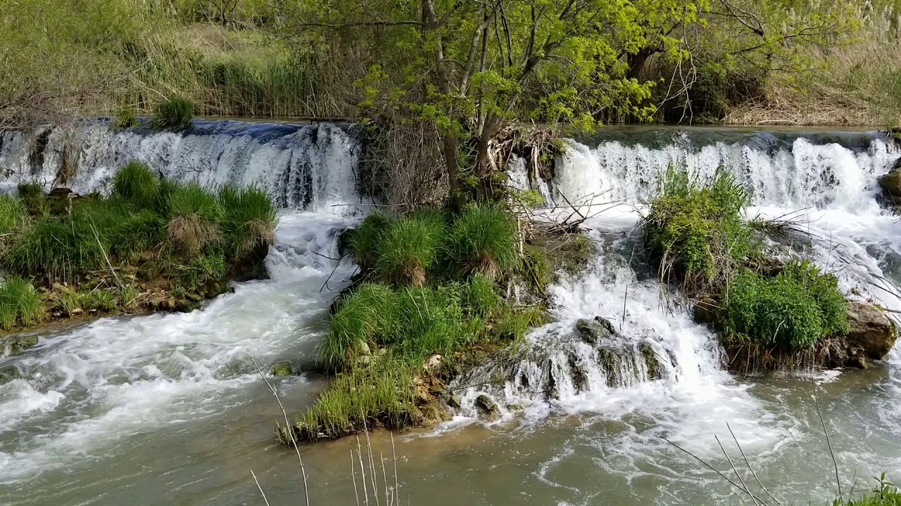

Akarsular
İl genelindeki başlıca akarsular; Buğur Çayı, Çağçağ Suyu, Savur Çayı ve Zergan Deresidir. Derik ilçesinin Buğur köyü yakınlarında doğan Buğur Çayı 53,65 km uzunluğunda olup, akarsuyun tamamına yakını il içerisinde akmaktadır. 103 km uzunluğundaki Çağçağ Suyunun tamamı il içerisinde akmaktadır. Savur ilçesinden kaynağını alan 92 km uzunluğundaki Savur Çayının 60,5 km lik bölümü il içerisinde akmaktadır.

Savur Çayı'nın videosu için görsele tıklayınız.